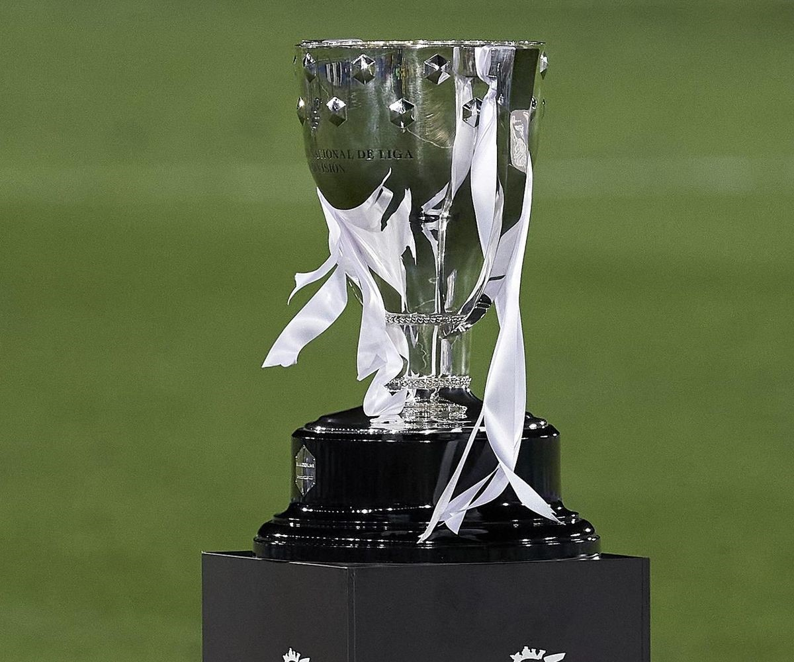
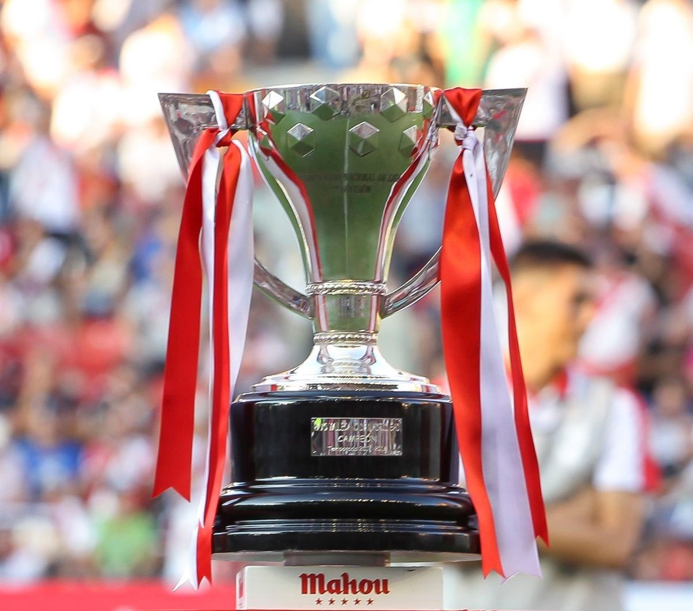
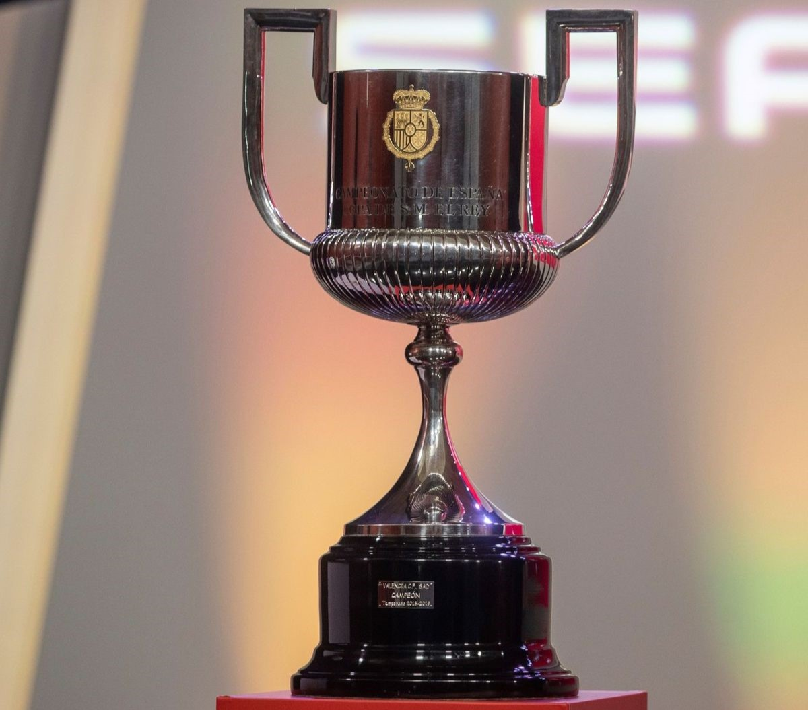
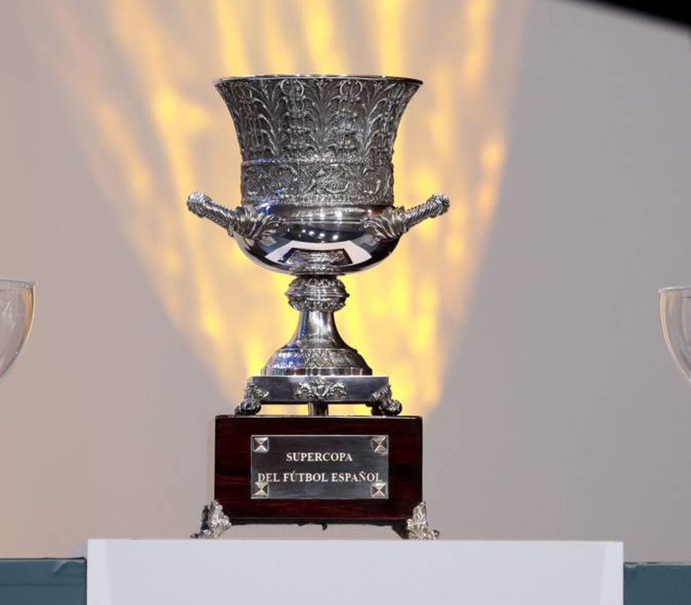

LaLiga Santander
Es el Campeonato Nacional de la Primera División del fútbol español, donde veinte equipos luchan por la supremacía del torneo durante 38 jornadas a doble vuelta. El orden de los partidos viene estipulado por sorteo antes de comenzar el torneo. La Liga Santander, cuyo nombre responde a los patrocinadores actuales del evento deportivo, es sinónimo de Campeonato Nacional de Liga de Primera División. Desde el año 1984 el campeonato era organizado por la RFEF, tomando el relevo la LFP o Liga de Fútbol Profesional. La primera liga se jugó en el año 1928 y se ha visto interrumpida pocas veces en la historia del fútbol: una debido a la Guerra Civil del treinta y seis y actualmente en 2020, por la pandemia del coronavirus. El 1º, 2º, 3º y 4º se clasificarán a la UEFA Champions League, el 5º y 6º a Europa League y el 7º a Conference League. Los 4 última clasificados descenderán de categoría.
En la temporada del 2008 al 2009 se llamaba BBVA. Debido a intereses publicitarios y diferentes objetivos de la entidad bancaria, se determinó que la temporada 2015 / 2016 la filial patrocinara la primera y segunda división del futbol nacional. A mediados del 2016 el Banco de Santander toma el relevo y firma un contrato con la LFP. El contrato cristalizó por un periodo de tres años y un gasto de veinte millones de euros por cada temporada, un monto inferior al de su rival el BBVA. La denominación de LaLiga, sin espacio entre el nombre y el artículo, se hizo para definir una palabra con mayor capacidad de explotación publicitaria.
LaLigaSmartBank
Es organizada desde 1984 por la Liga Nacional de Fútbol Profesional, tras suceder a la Real Federación Española de Fútbol (RFEF). Se disputa desde la temporada 1928-29, junto a la Primera División, viéndose interrumpida en dos ocasiones, entre 1936 y 1939, debido a la guerra civil española, y en 2020, debido a la pandemia de COVID-19. Es, junto a la Primera División, una de las dos únicas categorías con estatus profesional en España, ambas bajo el amparo de la Liga Nacional de Fútbol Profesional, mientras que el resto de divisiones dependen de la RFEF y de sus correspondientes federaciones autonómicas.
A lo largo de su historia, cuarenta y ocho clubes han resultado campeones de Segunda División, siendo el más laureado con 8 títulos el Real Murcia Club de Fútbol, seguido del Real Betis Balompié (7), y Real Club Deportivo de La Coruña, Real Sporting de Gijón y Real Oviedo (todos con 5). La Unión Deportiva Almería es el campeón vigente. El equipo que más puntos obtenga se proclama campeón de Segunda División y es ascendido, junto con el subcampeón, a Primera División. Además, desde la temporada 2010-11, también asciende el ganador de una promoción disputada entre el tercero, cuarto, quinto y sexto clasificados.
Copa del Rey
Es un torneo futbolístico por eliminación directa que se disputa anualmente entre los mejores clubes de España, conocido también como La Copa; organizado por la Real Federación Española de Fútbol. El club con más títulos es el FC Barcelona con veinticinco. Fue creada en 1903, a raíz del éxito de la Copa de la Coronación, disputada un año antes, siendo el torneo nacional de fútbol más antiguo de España. Si bien la denominación histórica y génerica de la competición es la de Campeonato de España, el título de la competición se ha modificado a lo largo de los años en función del Jefe de Estado español, que es quien otorga el trofeo. Fue la Copa de Su Majestad el Rey, entre 1903 y 1932, Copa del Presidente de la República entre 1932 y 1936, Copa de Su Excelencia El Generalísimo entre 1939 y 1976 y desde la temporada 1976/1977 nuevamente Copa de Su Majestad el Rey. Toman parte 83 equipos; todos los de la primera y segunda división, los mejores de la segunda B y los campeones de RFEF, excluyendo los equipos filiales. En la primera eliminatoria participan los 42 clubes no profesionales, esto es, segunda B y RFEF, que se emparejan por sorteo. Las eliminatorias se disputan a partido único. En la segunda ronda entran en liza los clubes de segunda división. A partir de la cuarta ronda –dieciseisavos de final– se incorporan los clubes de primera y las eliminatorias pasan a ser a doble partido –ida y vuelta– excepto la final, que se disputa a un partido en terreno neutral.
El campeón de Copa obtiene la clasificación para disputar la UEFA Europa League de la siguiente temporada, entre 1961 hasta 1999 participaba en la Recopa de Europa. Además, disputa la Supercopa de España de Fútbol, enfrentándose al campeón de la Liga española de esa misma temporada. Hasta la temporada 2004-2005 se jugaba a partido único en el campo del equipo más débil hasta octavos de final. Octavos de final, cuartos de final y semifinales se jugaban a partido doble. La final se disputaba a partido único en un terreno neutral. Sin embargo, en la temporada 2005-2006, la Real Federación Española de Fútbol modificó este sistema en favor de otro que desató gran polémica entre los clubes de divisiones inferiores: los equipos de segunda B se enfrentan entre ellos, luego juegan contra los de Segunda, los ganadores compiten otra vez entre ellos y luego se incorporan los equipos de primera que no disputan competiciones europeas. Los equipos participantes de la UEFA Europa League o la Liga de Campeones no comienzan hasta octavos de final. Fue en la temporada 2006-2007 cuando la Real Federación Española de Fútbol volvió a modificar el sistema. Los clubes de segunda B se enfrentan entre ellos, luego juegan contra los de la segunda división y, posteriormente, en dieciseisavos de final, juegan contra todos los conjuntos de primera división, jueguen o no competiciones europeas.
Supercopa de España
Es una competición oficial de fútbol organizada por la Real Federación Española de Fútbol, disputada a partir de 1982 y que desde 2020 enfrenta a los dos primeros clasificados de la Liga de Primera División y a los dos finalistas de la Copa del Rey de la temporada anterior. El precedente oficial inmediato fue la denominada Copa Eva Duarte, organizada por la Real Federación Española de Fútbol entre 1947 y 1953. Desde 1994 y hasta 2018 el trofeo se disputó anualmente a finales de agosto y supuso, junto con la Supercopa de la UEFA, el inicio oficial de la temporada futbolística en España. Se han disputado 39 ediciones de la competición (no se disputaron las ediciones de 1986 y 1987). Hasta la edición de 1995 si un equipo lograba los títulos de Liga y Copa, directamente se adjudicaba la Supercopa; sin embargo, desde 1996, si un equipo hace doblete, el título de la Supercopa lo disputa frente al subcampeón de Copa.
La Supercopa se disputa desde 2020 a modo de eliminatoria con semifinales y final entre los dos equipos finalistas de la Copa del Rey y los dos mejores clasificados del Campeonato de Liga. En caso de que algún equipo copase plaza en ambas competiciones, accederá a la Supercopa el o los mejor clasificados del Campeonato de Liga que no hayan disputado la final de la Copa del Rey. El campeón de copa se enfrenta al subcampeón de liga, y el campeón de liga se enfrenta al subcampeón de copa, con la excepción si deben participar los mejores clasificados de liga, en cuyo caso los partidos se deciden mediante sorteo. Anteriormente se jugó desde sus inicios por eliminación directa a doble partido (excepto en 2018, que se disputó a partido único en territorio neutral): el primer encuentro en el estadio del campeón de Copa y el partido de vuelta en el feudo del campeón de Liga. Las únicas ediciones en las que el orden de los partidos se invirtieron han sido las de 1983, 1988 y 1992. El equipo que lograba mayor diferencia de goles en ambos encuentros se proclamaba campeón del torneo. En caso de empate, los goles anotados en campo contrario tenían mayor valor generando así un punto a favor del equipo visitante. Si aun así persistía el empate, se disputaba una prórroga y, en última instancia, el título se decidía mediante lanzamientos de penalti.
